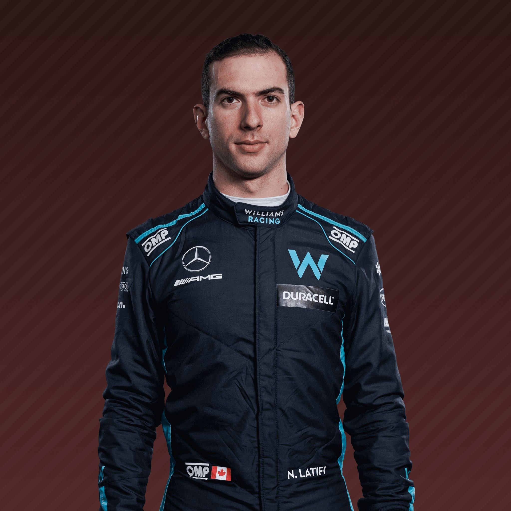

Thirteen is an advanced age to begin your karting career these days.
But that’s how old Toronto native Nicholas Latifi was when he took his first steps in motorsport.
Just 11 years later, he became a fully-fledged Formula 1 driver.
That ascension into racing's top category was largely thanks to his most impressive season to date in Formula 2 in 2019, with Latifi
who’d finished a disappointing ninth in the series’ 2018 standings – pulling up his bootstraps to claim second in the championship.
That result, combined with the Williams/Robert Kubica union failing to mesh in 2019,
meant Williams made the call to promote their affable Canadian reserve driver to a full-time drive alongside George Russell for 2020.
Latifi’s first taste of F1 machinery actually came all the way back in 2017, when he was given a test by Renault.
Further duties with Force India followed in 2018 before he joined the Williams family in 2019.
It was an annus horribilis for the squad, no doubt – but Latifi’s straightforward,
friendly attitude and insightful feedback helped swing the vote in his favour for 2020.
Now, after two seasons living in Russell’s shadow
and with Williams' form on the rise and a new team mate in the shape of ex-Red Bull racer Alex Albon
the goal is to show that that his eye-catching F2 year wasn’t just a fluke,
and finally prove that he really has got what it takes to mix it with the best drivers in the world.

| Team | Williams |
|---|---|
| Country | Canada |
| Podiums | N/A |
| Points | 9 |
| Grand Prix entered | 59 |
| World Championships | N/A |
| Highest race finish | 7 (x1) |
| Highest grid position | 10 |
| Date of birth | 29/06/1995 |
| Place of birth | Montreal, Canada |
Biography
Thirteen is an advanced age to begin your karting career these days.
But that’s how old Toronto native Nicholas Latifi was when he took his first steps in motorsport.
Just 11 years later, he became a fully-fledged Formula 1 driver.
That ascension into racing's top category was largely thanks to his most impressive season to date in Formula 2 in 2019, with Latifi
who’d finished a disappointing ninth in the series’ 2018 standings – pulling up his bootstraps to claim second in the championship.
That result, combined with the Williams/Robert Kubica union failing to mesh in 2019,
meant Williams made the call to promote their affable Canadian reserve driver to a full-time drive alongside George Russell for 2020.
Latifi’s first taste of F1 machinery actually came all the way back in 2017, when he was given a test by Renault.
Further duties with Force India followed in 2018 before he joined the Williams family in 2019.
It was an annus horribilis for the squad, no doubt – but Latifi’s straightforward,
friendly attitude and insightful feedback helped swing the vote in his favour for 2020.
Now, after two seasons living in Russell’s shadow
and with Williams' form on the rise and a new team mate in the shape of ex-Red Bull racer Alex Albon
the goal is to show that that his eye-catching F2 year wasn’t just a fluke,
and finally prove that he really has got what it takes to mix it with the best drivers in the world.
Gallery